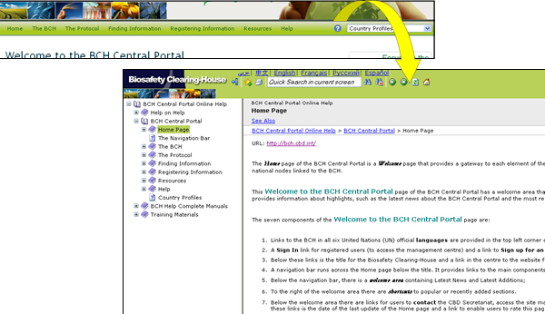

Al hacer clic sobre Ayuda en el menú de la barra de navegación se abre el Sistema de Ayuda en Línea del Portal Central del CIISB. Este sistema de ayuda proporciona información exhaustiva sobre el uso del CIISB. Ha sido diseñado como un sistema de ayuda sensible al contexto. Esto significa que el sistema es capaz de brindar contenido de ayuda relacionado a las páginas del CIISB que están siendo accedidas en ese momento. Para acceder a la ayuda sensible al contexto cuando esté usando el CIISB, simplemente haga clic sobre el ícono azul  con un signo de interrogación en la esquina superior derecha de cada página.
con un signo de interrogación en la esquina superior derecha de cada página.

El sistema de ayuda ha sido desarrollado en los seis idiomas oficiales de la ONU. El usuario puede cambiar de idioma si lo necesita usando la barra de idiomas en el Sistema de Ayuda. Este sistema de ayuda también puede ser utilizado para leer los manuales completos de ayuda en línea.
El menú Ayuda del Portal Central del CIISB proporciona acceso a varios ítems de ayuda:
-
Ayuda: este es un enlace a la página principal de contenidos de ayuda en el Sistema de Ayuda en Línea del CIISB.
-
Ayuda sobre la ayuda: este es un enlace a una página de ayuda que contiene información sobre cómo usar el Sistema de Ayuda en Línea del CIISB y explica sus principales funcionalidades.
-
Portal Central del CIISB: este enlace lleva al usuario a una sección en el Sistema de ayuda con contenido exhaustivo sobre el Portal Central del CIISB.
-
Manuales Completos de la ayuda del CIISB: este enlace lleva al usuario a una sección en el Sistema de Ayuda en la cual se pueden encontrar todos los módulos de entrenamiento para leer en línea, cada uno de ellos organizado en diferentes páginas web.
-
Materiales de Entrenamiento; este enlace lleva al usuario a una sección en el Sistema de Ayuda que proporciona acceso a todos los materiales de entrenamiento disponibles para descargar.
-